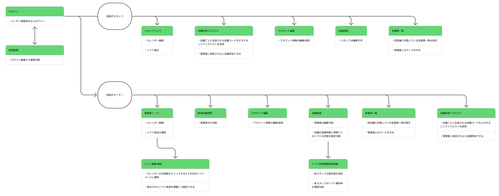

BestShift
Automatic Shift Management System
プロジェクト概要
Overview
飲食店でのアルバイト経験から着想を得た、シフト希望の提出から自動調整・確定までを一気通貫で行うフルスタックWebアプリケーションです。 スタッフはカレンダーUIからシフト希望を提出し、管理者はガントチャートUIでシフトを視覚的に調整・確定できます。 また独自の自動調整アルゴリズムにより、スタッフの優先度と累積棄却率を考慮した公平なシフト割り当てを実現しています。 最終的には給料計算や人件費管理、求人機能なども搭載したいと考えています。
※ バックエンドはRenderの無料プランで稼働しているため、初回アクセス時に起動まで数十秒かかる場合があります。
開発の背景
Motivation
飲食店のアルバイトとして働く中で、店長・オーナーがシフト調整に多くの時間と労力を費やしていることを目の当たりにしました。 手書きやSNSでのシフト回収、表計算ソフトへの手入力といったアナログな工程を自動化することで、 ヒューマンエラーの削減と作業時間の大幅な短縮を目指しています。 また、Webアプリケーション・モバイルアプリ開発への興味から、独学でこのアプリケーションを制作しています。
主な機能
Features
スタッフ向け
- シフト希望提出: カレンダーUIから直感的にシフト希望を提出・修正
- 確定シフト確認: 月次サマリーで確定シフト・合計労働時間を一覧表示
- 店舗参加: 店舗コードを入力してオーナーに参加リクエストを送信
管理者(オーナー)向け
- シフト状況カレンダー: 月単位で各日の希望提出状況を色分け表示（確定済 / 未確定 / 希望なし）
- シフト調整・確定: ガントチャートUIでスタッフのシフトを視覚的に調整・確定
- シフト自動調整: 時間帯別定員・スタッフ優先度・累積棄却率を考慮した自動割り当て
- 棄却履歴管理: スタッフごとの希望採用率を記録し、長期的な公平性を担保
- 参加リクエスト管理: スタッフの店舗参加リクエストを承認/拒否
技術的な工夫点
Technical Highlights
自動調整アルゴリズム
単純な優先度順ではなく、累積棄却率を考慮した貪欲法を実装しています。 優先度が同じスタッフ間では「過去に多く棄却されたスタッフ」を優先することで、 長期的なシフト割り当ての公平性を担保しています。
- ソート基準① : 優先度（高い順）
- ソート基準② : 同優先度内 → 累積棄却率（高い順）
- ソート基準③ : 同棄却率 → ランダム（毎回同じ人が有利にならないように）
JWT認証のマルチプラットフォーム対応
モバイルアプリ（Authorizationヘッダー）とWebアプリ（Cookie）の両方に対応するため、
JWT_TOKEN_LOCATION = ["headers", "cookies"] を設定し、
同一バックエンドAPIをどちらからでも利用できる構成にしています。
ガントチャートUIによるシフト調整
管理者向けのシフト調整画面では、各スタッフの希望シフトと調整後のシフトをガントチャートで視覚的に比較しながら ドロップダウンで時間を調整できるUIを実装しています。
技術スタック
Tech Stack
フロントエンド
- Framework: Next.js 15 (App Router)
- Language: TypeScript
- Styling: Tailwind CSS v4
- State Management: React Context API
- HTTP Client: Axios
- 日付処理: date-fns
バックエンド
- Framework: Flask (Python)
- Auth: Flask-JWT-Extended
- ORM: SQLAlchemy
- Database: PostgreSQL (本番) / SQLite (開発)
- Web Server: Gunicorn
モバイル (開発中)
- Framework: Flutter
- Language: Dart
- 状態管理: Riverpod
- ルーティング: go_router
- HTTP Client: Dio
インフラ・運用
- Frontend Hosting: Vercel
- Backend Hosting: Render
- Database Hosting: Render (PostgreSQL)
- Container: Docker / Docker Compose
画面遷移図
Screen Transition Diagram
クリックして拡大できます

テストユーザー
Test Users
以下のテストユーザーでログイン可能です
| ユーザー名 | 役割 | パスワード |
|---|---|---|
| admin | オーナー | pass |
| yamada | スタッフ | pass |
| sato | スタッフ | pass |
| suzuki | スタッフ | pass |
| taro | スタッフ | pass |
| hanako | スタッフ | pass |
| jiro | スタッフ | pass |
| sakura | スタッフ | pass |
| akira | スタッフ | pass |
| yuki | スタッフ | pass |
| hana | スタッフ | pass |
現在の進捗
Current Status
- データベース設計: Shop, User, Shift, AutoAdjustConfig, ShiftRejectionHistoryのモデル実装とリレーション定義。
- 認証: Flask-JWT-ExtendedによるJWT認証。Cookie/Authorizationヘッダー両対応。
- スタッフ機能: シフト希望提出・確定シフト確認・月次サマリー・店舗参加リクエスト。
- 管理者機能: シフト状況カレンダー・ガントチャートによるシフト調整・確定・自動調整・棄却履歴管理・参加リクエスト承認。
- インフラ: Docker Composeによるローカル開発環境・Vercel+Renderによる本番デプロイ。
- モバイルアプリ: Flutterにて開発中。
今後の展望
Future Work
- モバイルアプリ完成: FlutterによるAndroid/iOSアプリの完成。
- ポジション別定員設定: 時間帯・ポジション別の必要人数を柔軟に設定できる機能。
- 給与計算・人件費管理: 確定シフトをもとにした給与・人件費の自動計算。
- プッシュ通知: シフト確定時のスタッフへの通知機能。
- 複数店舗対応: スタッフ・オーナーともに複数店舗への所属対応。
- セキュリティ強化: 実運用に向けたCSRF対策・レート制限・ログ管理の整備。